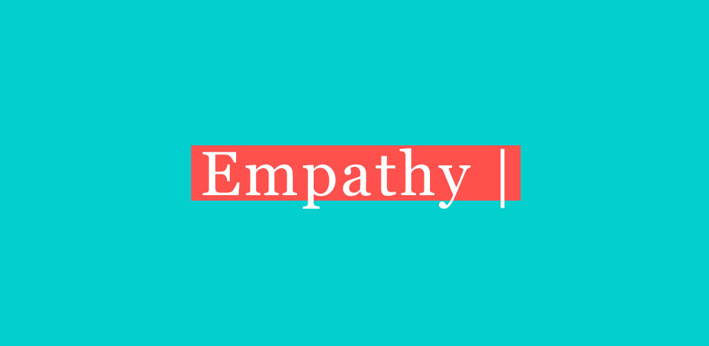
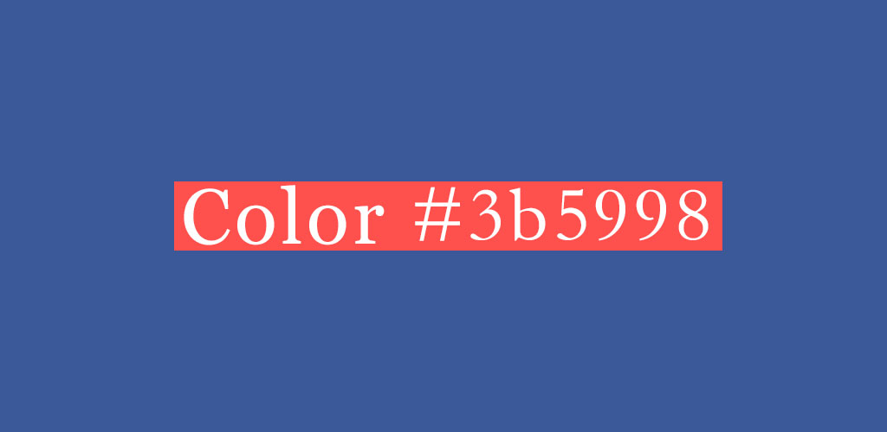
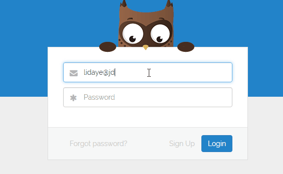
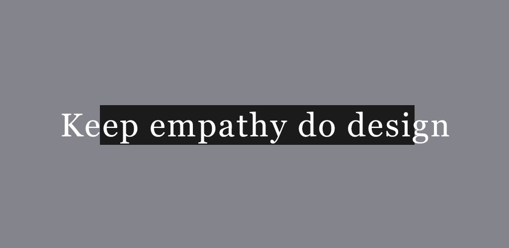

15 Sep 2017
保持同理心 从用户角度出发
保持同理心去做设计，从用户的角度去思考问题。你的产品和设计应是为用户服务而不仅仅是为了完成KPI和满足自己的创作欲。
大家理解的同理心也许就是“换位思考，将心比心”。但是仅此是不够的，不管是在设计领域还是在现实生活当中，同理心应做到“换位感知，换位行动”。保持同理心去做设计，让产品去为用户的使用体验而自行动应是当代设计师应保持的设计态度。
生活中的同理心表现在人与人之间的相处，个人情商的体现。大多在家庭中，个人情感中，进入他人的内心世界神入、移情、共情通过自己内心的认识理解他人，保持一颗同理心能让人与人之间产生更美好的感受。
同理心的特点
同理心的基础是观察，我们的目标是寻找用户的内心需求以创造产品，用户甚至不知道他们的愿望，或在某些情况下解决用户有困难的预想，由于锁定在一个旧的思维定势，所以不熟悉新技术所提供的可能性。同理心设计依赖于使用者，而不是传统的市场调研观察，它依赖于使用用户查询的意图，以避免可能出现的偏差的调查和问题。
设计中的同理心，如何利用同理心做好设计呢？
“同理心”是设计师的非常重要的一项能力，生活中许多优秀的设计，都是在同理心的基础上演变出来的。
举个栗子吧
色盲眼中的色彩
根据查询调查显示，其实世界上是有9%的男性和0.5%的女性是色盲群体，按照全球70亿的人口来计算的话，色盲人口数量约为6亿多，这么庞大的一个群体在我们设计的时候经常被忽略。

起初Facebook在这方面做的就很好，主题色是蓝色#3b5998。
在心理因素上
蓝色属于冷色系，而人的视网膜对冷色系的耐受度比较高，而蓝色，恰恰是冷色系里耐受度最高的。蓝色会让人感到平静安宁、深沉有礼。
在调查数据上
色彩心理学上有统计：蓝色是人们最喜爱的颜色，它是40%的男性和36%的女性最喜欢的颜色，只有2%的男性和1%的女性在调查表中选择蓝色作为「最不喜爱的颜色」。
然后红色是喜爱人数第二多的，各有20%的男人和女人把红色列为最喜爱的颜色，只有2%的男人和3%的女人称红色是「我不喜欢的颜色」。
除此之外蓝色是色盲群体中识别率最高的，蓝色一方面使绝大多数用户使用体验上更好，另一方面又考虑到大部分的色盲群体。
同理心在设计中的运用
用Readme的登陆页面来说一下吧
Readme的登陆页面，在你输入密码的时候，表单上的猫头鹰会动态遮住自己的眼睛，在这个过程中就不自觉给用户传递了一种使用安全感。这个动作直接就让用户感觉到了此设计和功能对用户的重视度和安全性，用可爱的猫头鹰让用户在输入表单登录时不再感到焦虑和烦躁，给用户一个更舒心的使用体验。这样的设计就是同理心，从用户的角度去考虑和行动，解决用户和自己在使用时的内心顾虑。
在设计中如何培养自己的同理心呢？
作为互联网产品设计人员，最好的方式就是“想办法让自己变成用户”。用户是由各色各样具有不同特质的人构成，他们不但具有形形色色的标签，而且他们也是处于不停得变化状态中的。站在他们的内心世界去思考和行动，设计才能更好的了解用户，服务用户。
多向用户提问，了解用户使用数据，从不同用户的反馈中了解用户需要什么，反感什么。问用户梦想中的产品是什么样的，沟通是人与人之间最好的了解方式。
多使用优秀产品，知己知彼百战百胜。作为互联网设计师，手机上下满各类APP，浏览器收藏满优秀web设计，多思考分析优秀案例。
多看关于心理学和用户体验类的书籍，心理学是是一门研究人类的心理现象、精神功能和行为的科学，只有知道了别人怎么想，才知道怎么做。比如《设计心理学系列》《设计师要懂得心理学》《众妙之门系列》《破茧成蝶》《易用之王》《简约至上》《见微知著》《怦然心动》都是比较推荐的书籍。

总结#
“同理心”就是从别人的感情出发，站在别人的角度思考，将心比心的能力。懂得表达自己的感受，正确表达出实际的感受．知道和懂得表达自己的感受，才能了解和识别他人的感受。用同理心做出的设计，总体表现优秀的用户体验，反过来讲，凡是用户体验做的好的，都是同理心很强的人。
设计师都应保持同理心，保持好奇心，保持能够独立思考的能力。用心做好每一款服务于用户的产品。